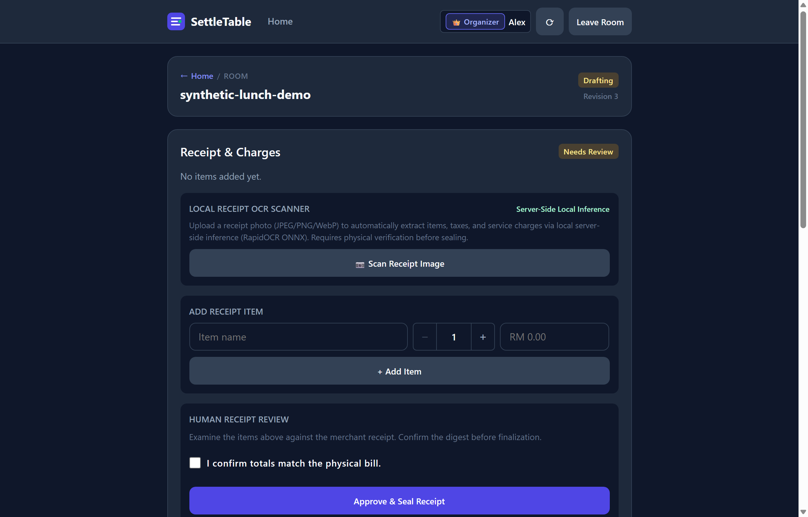

Stage 1
Desktop View (1280x820)
Organizer Room Setup & Ingress Boundary

Ephemeral Setup & Loopback Protection
In production, public external clients cannot invoke the bootstrap endpoint. The organizer meal room is initialized via administrative host CLI (tools/bootstrap_meal.py), which generates a single-use setup link with an ephemeral claim token.
Redeeming this link sets a secure, encrypted HttpOnly session cookie without exposing credentials in server access logs or terminal history.
Key Safety Guard: External
POST /api/meals/{id}/bootstrap is blocked by ingress WSGI guards; room creation is restricted to the host CLI.